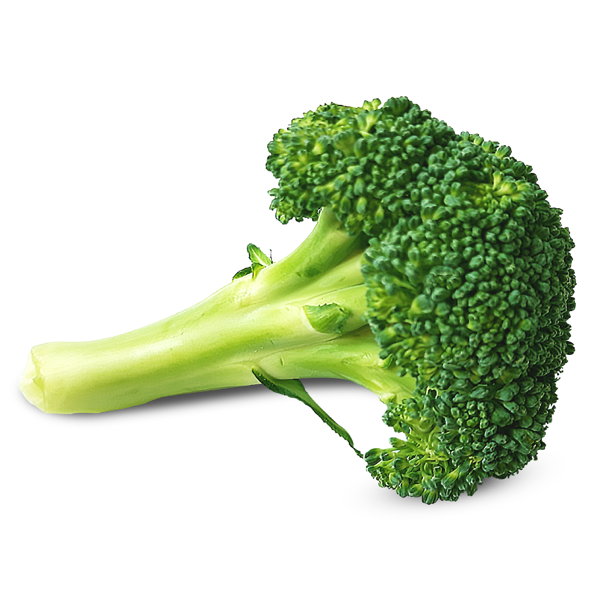

What do I have in my fridge?

Pepper

Apple

Cheese

Corn

Mushroom

Garlic

Beef

Fish

Eggs

Coriander
...that's all...
Health Benefits of Broccoli
Broccoli belongs to a family of vegetables called cruciferous vegetables and its close relatives include brussel sprouts, cauliflower, and cabbage. Broccoli contains sulforophane, a sulfur-containing compound present in cruciferous vegetables. Researchers are studying the anti-cancer properties of sulforophane and have come to some interesting conclusions, although more research is needed.
As if that's not enough, a cup of cooked broccoli offers as much vitamin C as an orange, and is a good source of beta-carotene. Broccoli contains vitamins B1, B2, B3, B6, iron, magnesium, potassium, and zinc too. It also provides fiber and is low in calories.
Broccoli Nutrients
Broccoli is a great source of vitamins K and C, a good source of folate (folic acid) and also provides potassium, fiber.
Vitamin K – essential for the functioning of many proteins involved in blood clotting
Vitamin C – builds collagen, which forms body tissue and bone, and helps cuts and wounds heal. Vitamin C is a powerful antioxidant and protects the body from damaging free radicals.
Fiber – diets high in fiber promote digestive health. A high fiber intake can also help lower cholesterol.
Potassium – a mineral and electrolyte that is essential for the function of nerves and heart contraction.
Folate – is necessary for the production and maintenance of new cells in the body.